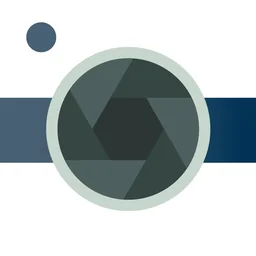

appbee Soft · iPhone · Android
일상을 더 예쁘게 담는,
일상을 더 예쁘게 담는,
작고 단정한 카메라 앱을 만듭니다.Small, thoughtful camera apps
for everyday moments.
appbee Soft는 작고 단정한 모바일 앱을 만드는 스튜디오예요.appbee Soft is an independent studio making small, thoughtful mobile apps.

조용한 카메라Timer Camera
Silent CameraPhoto Filter & Timer
셔터 소리 없이 원본 화질로. 필터와 간편 편집까지 담은 카메라.Beautiful filters, a hands-free timer and quick editing in one simple camera.
해냈샷Stamp Camera
Stamp Camera: Done & DatedDone & Dated
운동·공부·식사 인증샷에 날짜와 기록을 스탬프로 남기는 카메라.A proof-shot camera that stamps your workouts, study and meals with the date and details.